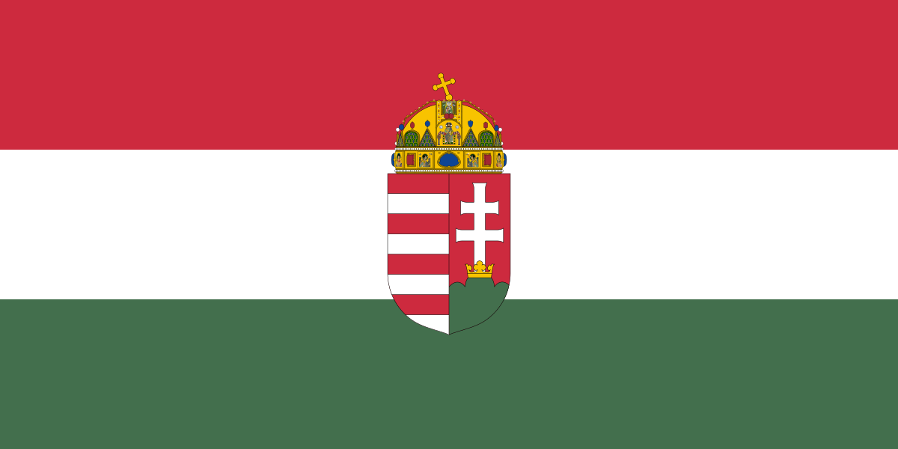

története Magyaországon
A magyarországi labdarúgás legelső irodalmi emléke 1879-ből származik. Molnár Lajos a MAC egyik alapítója tesz említést „Athletikai Gyakorlatok” című szakmunkájában. A pesti református főgimnáziumban 1882-ben hozták létre az első szabadtéri játszó társaságot, ahol a diákok örömmel ismerkedtek a „rúgosdi” játékkal is. A magyar labdarúgás következő fontos dátuma 1885. június 16-a volt, ugyanis ekkor alakult meg az egyik legjelentősebb hazai egyesület, az Újpesti Torna Egylet.
